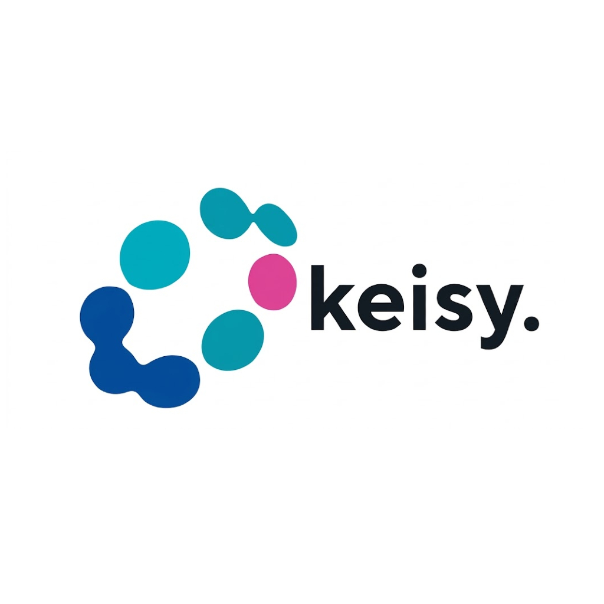

Emily Monterrosa
Full-Stack Dev. (Backend)
Desarrollo APIs, aplicaciones impulsadas por IA y sistemas backend orientados a productos web escalables.Quién Soy
Desarrolladora Backend enfocada en Node.js y Python, interesada en construir aplicaciones web, APIs y sistemas impulsados por IA.
Disfruto transformar ideas en productos funcionales, priorizando estructura, claridad y lógica antes que complejidad innecesaria. Me interesa entender cómo se comportan los sistemas, cómo escalan y cómo las decisiones técnicas impactan la experiencia real del usuario.
Actualmente desarrollo proyectos enfocados en inteligencia artificial, plataformas educativas y sistemas backend orientados a productos modernos.
Cómo Pienso
Me interesa resolver problemas desde la lógica y la estructura, priorizando soluciones claras antes que complejidad innecesaria.
Al desarrollar sistemas, intento identificar primero la restricción principal y construir a partir de ella. Prefiero soluciones mantenibles, escalables y alineadas con las necesidades reales del producto.
No busco complejidad por apariencia. Busco coherencia técnica y soluciones que realmente funcionen.
Desarrollo Backend
Desarrollo Frontend
Bases de Datos
Herramientas & Flujo de Trabajo
NURA: Sistema de inteligencia artificial para análisis de datos empresariales
Plataforma de Business Intelligence con IA para análisis automatizado de datos empresariales y generación de insights accionables. Desarrollada con Django, Pandas, Supabase y Groq.

KEISY MEDICAL: Plataforma de Análisis & Detección de Riesgos Clínicos
Plataforma de analítica para salud con ETL automatizado, dashboards interactivos y modelos de machine learning para detección de riesgos clínicos. Desarrollada con Django, Pandas, Scikit-learn, Chart.js y Supabase.